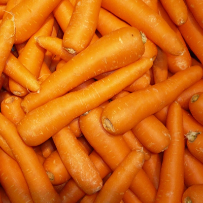
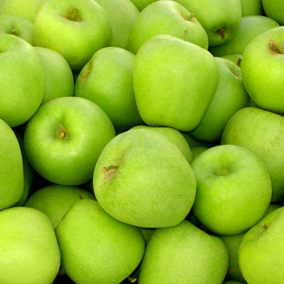
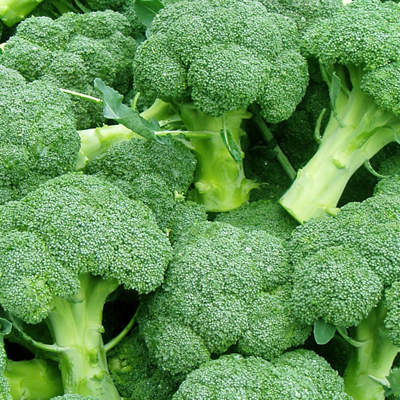
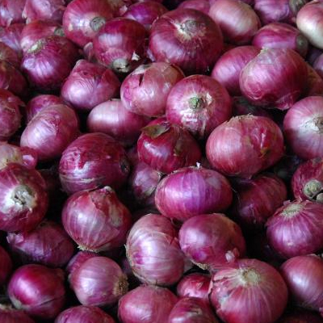

Best Broccoli
Your List
Broccoli
Carrots
Mushrooms
+Add Item
Your Settings
You have 13 broccoli poinst!
Michael Benedict
Change Password
Upload Photo
Fresh Produce

Carrots
at Food Lovers
45 mins ago
54

Green Apples
at Shoppers
58 mins ago
7

Broccoli
at Garden Market
2 hours ago
13

Red Onions
at Garden Market
5 hours ago
126
Share
Upload Photo
What did you find?
apples
broccoli
carrots
durians
Where are you?
Garden Market
Food Lovers (Msasani Rd)
Shoppers (Haile Selassie)
Village Market (Chole)
13